Route network simplification for transport planning
Robin Lovelace ![]()
Zhao Wang
Will Deakin
Josiah Parry
Reproducibility
To reproduce this paper you need quarto installed.
After installing the dependencies, you can reproduce the paper by running the following command in the terminal:
quarto render paper.qmdInstall the dependencies by cloning the repository and running the following:
requirements_txt = readLines("requirements.txt")
py_install(requirements_txt, pip = TRUE)To contribute to the papers written as quarto documents (with .qmd extensions) like this one, we recommend using the Quarto extension for VS Code. You can go into the visual editor with the following shortcut:
Ctrl+Shift+F4You can then add citations with Ctrl+Shift+F11 and benefit from Quarto’s other features for academic writing.
Abstract
Route network datasets are central to transport models as key inputs and outputs. The complexity of route network inputs from sources such as OpenStreetMap has increased over time, enabling more precise modelling of sustainable modes such as walking and cycling. However, this complexity can affect the visualisation of model results. A common issue is the presence of multiple parallel ways on the same corridor. This can lead to incorrect traffic flow values inferred from visual inspection of results, misinterpretation of model outputs and, potentially, investment in the wrong places. To address this challenges, we present and compare two methods for simplifying route network datasets: 1) image skeletonization and 2) Voronoi diagram-centreline identification approaches. These methods have real-world applications in urban mobility and green transportation, as illustrated by the use of the simplified network results in the Transport for Scotland funded Network Planning Tool, which is publicly available at www.nptscot.scot. Being developed with open data and open-source software, these methods are not only reproducible but also adaptable, enbabling their use in new contexts.
1 Introduction
Datasets representing route networks are central to modern transport planning: they are used as inputs to transport models and are vital for the visualisation and interpretation of model outputs. Origin-destination, GPS, and remote sensing imagery datasets are all key inputs to transport models but are seldom the outputs of these models. Rather, outputs of these models are often estimates of costs and benefits to proposed changes to transport systems, geographic datasets at regional, local and corridors levels, or visualizations of agents on the system. However, route network datasets are ubiquitous as both transport model inputs and outputs. As inputs, they typically represent road networks. Alternatively, when provided as model outputs, they tend represent metrics such as flow per time of day and are intended to be use as an input for data visualisualization.1
This raises questions about what transport network datasets are, and how they can be optimized for more effective decision-making. An intuitive definition is that route network datasets are digital representations of footpaths, cycleways, highways and other ways (to use the OpenStreetMap terminology) along which people and goods can travel. More formally, transport network datasets must contain, at a minimum, geographic information on the coordinates of vertices (points along ways) and edges (the straight lines between vertices representing ways). Usually they also contain attributes such as the type of way, it’s characteristics (e.g. is lit at night), and the amount of traffic using each segment.
File formats for representing route networks include Transportation Network Test Problem files (TNTP and stored as a series of .tntp plain text files, examples of which can be found in github.com/bstabler/TransportationNetworks), .DAT files used by the proprietary SATURN transport modelling system and XML-based .osm or .pbf files that encode OpenStreetMap data. A more recent approach is to represent transport networks in standard geographic file formats. In this approach, used in the present paper, transport networks are represented as a series of non-overlapping linestrings, with attributes such as way type and flow. Making transport datasets compliant with the ‘simple features’ geographic data specification in this way has advantages, enabling more easier sharing of datasets between people and programs. The simple features standard is formalised by the International Organization for Standardization in ISO 19125-1:2004 and implemented in a wide range of file formats such as ESRIs shapefile, GeoJSON, and the open standard for geographic data, GeoPackage. For ease of data sharing, we share transport networks used in this paper as plain text GeoJSON files.
A problem associated with the trend towards geographic representation of route networks is increasing file sizes and complexity. With the increasing availability of high resolution imagery, citizens (e.g. via OpenStreetMap) and national mapping agencies are mapping more and more detail. Overall this is a good thing for transport planning research, but excess complexity and intricacy can lead to problems, as outlined in the next section.
The aim of this paper is to articulate the problem of complex route networks, present solutions with implementations in open source software for reproducible research, and describe applications of the methods to support more effective transport planning. Section 2 outlines the problem of complex route networks. Section 3 describes the input datasets. Section 4 presents methods for route network simplification alongside results based on the example datasets. In Section 6 we discuss the results and outline future work.
2 Prior work and problem definition
Morgan and Lovelace (2020) presented methods for combining multiple overlapping routes into a single route network with non-overlapping linestrings for visualisation, implemented in the function overline(). The approach takes overlapping linestrings representing multiple routes and combines them into a single network with non-overlapping linestrings. The approach has been used to visualise large transport networks, informing investment decisions in transport planning internationally. However, the ‘overline’ approach, without further processing, has limitations:
- It does not remove redundant vertices, which can lead to large file sizes and slow rendering.
- Parallel ways that are part of the same corridor are not merged into a single way, resulting in outputs that are difficult to interpret.
The final point is most relevant to the present paper. An example of the issue is shown in Figure 1 from the Propensity to Cycle Tool for England (PCT), with segment values representing daily commuter cycling potential flows (Lovelace et al. 2017). The left panel shows Otley Road with a flow value of 818 (Figure 1 (a)). The right panel, by contrast, shows three parallel ways parallel to Armley Road with flow values of 515 (shown), 288 and 47 (values not shown) (Figure 1 (b)). Although this section of Armley road has a higher cycling potential than the section of Otley Road shown (515 + 288 + 47 > 818), this is not clear from the visualisation.


A subsequent step described in the paper is to post-process the geographic representation of the transport network into a raster image, which can be used to visualise the network. The ‘rasterisation’ stage can tackle some of the issues associated with multiple parallel ways, but introduces new issues, as shown in Figure 2.


The methods presented in this paper are designed to take a complex network as an input and output a simplified network, while preserving the spatial structure of the network and relevant attributes. By reducing duplicated parallel lines and other intricacies, the outputs can enable easier-to-interpret visualisations of transport behaviour on the network patterns and behaviors.
3 Data
The input datasets are presented in Table 1.
Table 1: Input datasets used in this paper.
| Network | N. segments | Description | Source |
|---|---|---|---|
| Otley Road | 21 | A corridor in Leeds represented by a single centreline | Propensity to Cycle Tool (derived from OSM) |
| Armley Road | 27 | A road in Leeds represented by multiple parallel ‘braided’ linestrings | Propensity to Cycle Tool (derived from OSM) |
?(caption)
The input datasets are illustrated in Figure 3.
4 Methods
There are two main challenges that need to be overcome to simplify transport networks, in a way that preserves their value:
- Simplifying the geometry
- Assigning attributes to the simplified network
4.1 Simplifying the geometry
4.1.1 Topology-preserving simplification
Topology-preserving simplification reduces the number of vertices in a linestring while preserving the topology of the network. As shown in top panel of Figure 4, topology-preserving simplication can reduce the number of edges, but fails to merge parallel lines in complex geometries, as shown in the the bottom panel in Figure 4.
mapshaper JavaScript package. The % values represent the “percentage of removable points to retain” argument values used in the simplification process.4.1.2 Network Simplification
The paper presents two approaches for network simplification: one involves image skeletonization, while the other utilizes Voronoi diagrams to identify central lines. The detailed steps of the methodology will be presented in the following sections.
4.1.3 Create a projected combined buffered geometry:
In both approaches, the network simplification process initiates with the generation of buffered geometries, achieved using the get_geometry_buffer function. A buffer size of 8 meters is selected for this purpose. These buffered geometries are essential for spatial analyses as they extend the influence area of each geometry, thereby facilitating the identification and processing of geometries that intersect or lie adjacent to each other in subsequent stages of the analysis.
The buffered versions of the networks are presented below:
4.1.4 Skeletonization
The buffered lines are merged to create a raster image, which is then subjected to a thinning process to yield a skeletal remnant. This remnant retains both the extent and connectivity of the original network, centered around a line that aligns with the combined buffered region. This process is demonstrated using the Sample Street Network.
Establish an affine transformation that maps the points within the buffered geometry to corresponding positions in the raster image
A scaled affine transformation is calculated to align the projected coordinate geometry with the corresponding scaled raster image.
4.1.5 Affine transforms
The affine transformations for Rasterio and Shapely are demonstrated with a scaling factor of 2.0. The Rasterio transform applies a scale and translation in a specific order, while the Shapely transform follows a different order for scaling and rotation, as illustrated in Table Table 2.
Table 2: Rasterio and Shapely affine transformation matrices for the Otley Road network.
| 0.5 | 0 | 426757 |
| 0 | -0.5 | 437646 |
| 0 | 0 | 1 |
| 0 | -0.5 | 426757 |
| 0.5 | 0 | 437646 |
In these matrices, the first two columns represent the scaling and rotation components, while the last column represents the translation. The Rasterio transform matrix first scales the coordinates by 0.5 and then translates them, whereas the Shapely transform first rotates the coordinates and then applies the scaling.
4.1.6 Skeletonize the buffer to a point geometry
A scaled affine transformation is applied to align the projected coordinate geometry with the scaled raster image. This transformation adjusts the geometry to match the raster’s scale and orientation. Following this, the raster image undergoes a cleaning process to eliminate small holes that often appear in areas where buffered lines run parallel or intersect at shallow angles, resulting in raster representations illustrated in Figure 8. This step ensures a more coherent and accurate representation in the raster image.
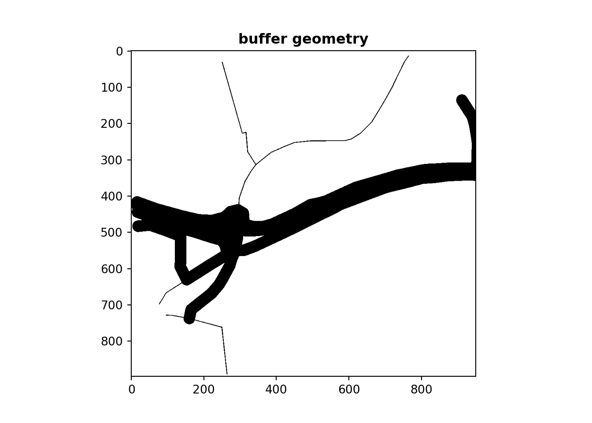
The image undergoes a thinning process, yielding a skeletal raster image as the result. This skeletonized image effectively captures the essential structure and layout of the original network, as illustrated in Figure 9.
The rasterized skeletal image is then converted back into point geometry, completing the vector -> raster -> vector geometry transformation process.
The challenge with this approach is that instead of generating points situated on the simplified network, it returns a set of points rather than line geometries. This necessitates the inference of line geometry from the associated set of points. Transforming a skeletonized point set into a simplified line geometry is arguably the most complex step in creating a simplified network.
The process of transforming point geometry into line geometry involves identifying adjacent points based on proximity within the raster coordinate system, usually within a 1x1 pixel square. After adjacent points are identified, line segments are created by connecting these points. The final and crucial step is the amalgamation of these individual line segments. This combination results in a continuous line geometry that represents the simplified network. To visualize the simplified network in its original spatial context, the reverse affine transformation is applied. This step reverts the network back to its original coordinate system, aligning the simplified geometry with the original spatial framework. The resulting simplified network is illustrated in Figure 10.
4.1.7 Knots
Knots in the network are multiple short segments at intersections, resembling tangled knots. To remove these features of networks, which add complexity that is rarely relevant for strategic transport planning, short segments are clustered together, and a central point for each cluster is determined. The end-points of longer lines that connect to these segment clusters are then realigned to the cluster’s central point. This process effectively removes the knot-like appearance. As with previous steps, the reverse affine transformation is applied to the simplified network before plotting, ensuring the network is represented in its original spatial context, as illustrated in Figure 11.

4.1.8 Primal network
There are circumstances where it might be beneficial to view a “primal” network, which is exclusively composed of direct lines connecting start and end points. This primal network represents an extreme form of simplification, of great potential value in situations in which the network’s overall structure and compression ratios are priorities. The primal networks for the Otley Road and Armley Road networks are illustrated in Figure 12.

4.2 Simplification via Voronoi polygons
In this approach, the network lines are first buffered as described above. The edges of these buffers are then segmented into sequences of points. From these sequences, a centre-line is derived based on a set of Voronoi polygons that cover these points. This approach facilitates the creation of a simplified network representation by focusing on the central alignment of the buffered lines.
4.2.1 Boundary Segmentation
The boundary of the buffered input geometry is calculated and simplified, giving a simplified GeoSeries of LineStrings, correctly aligned with a specified coordinate reference system (CRS). This functionality is particularly useful in geographic information systems (GIS) for delineating and visualizing precise boundaries of spatinal objects. The code demonstrates its utility by applying the function to a geometry (otley_geometry) and visualizing the resultant simplified boundaries (otley_boundary), highlighting its practical application in spatial analysis and network simplification. The simplified LineString geometries are then broken down into shorter segments.
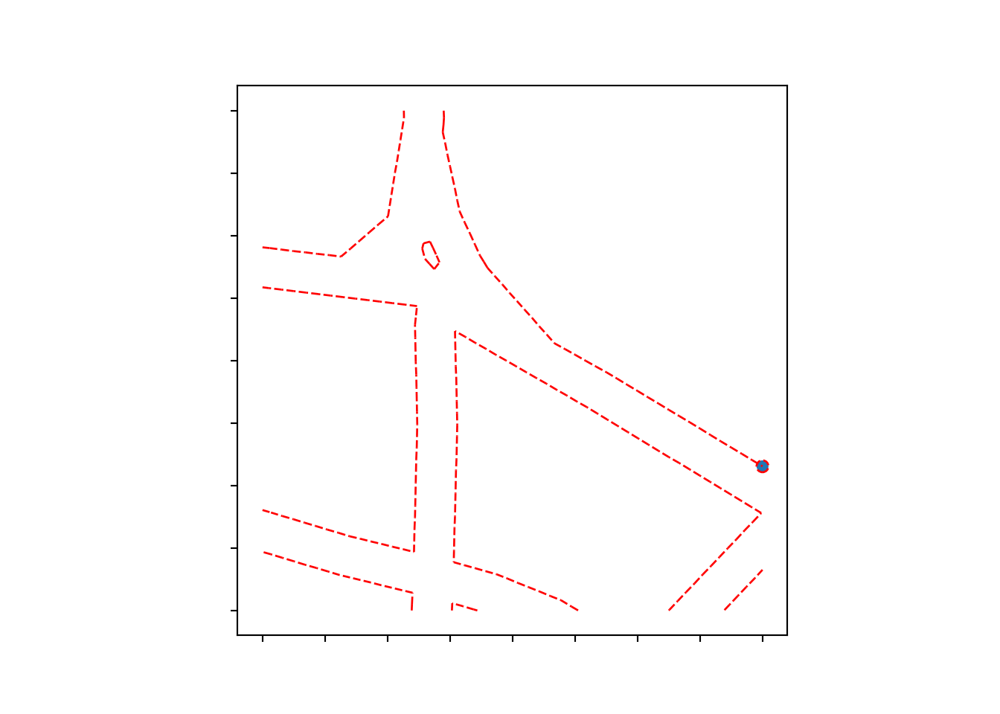
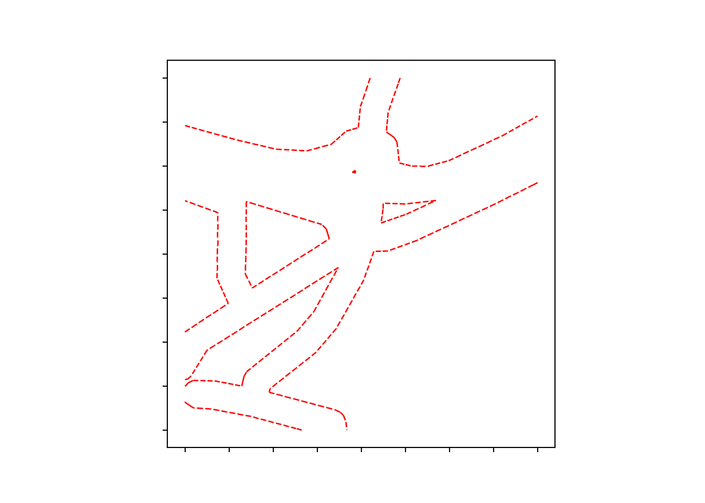
The simplified LineString geometries are converted into point geometries, detail Figure 15.
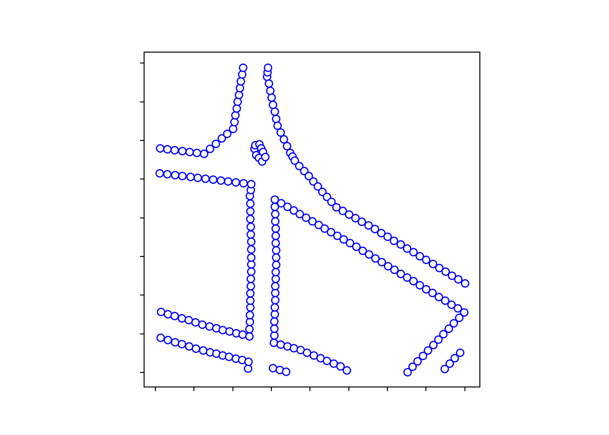
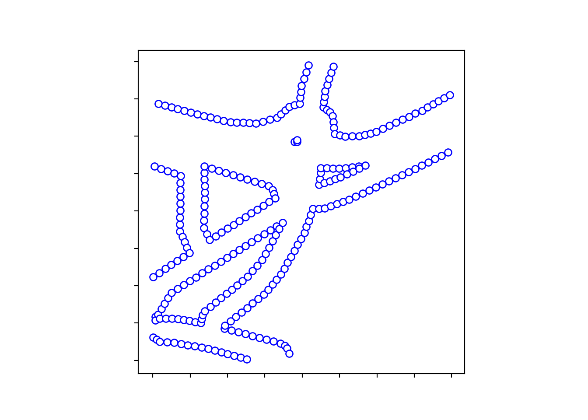
4.2.2 Voronoi diagram
The corresponding Voronoi diagrams is generated and clipped to the bounds of input geometry, as illustrated in Figure 16 figures below.
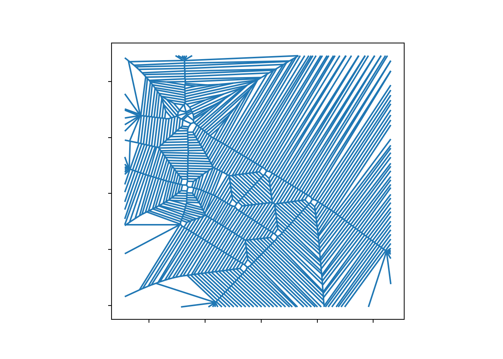
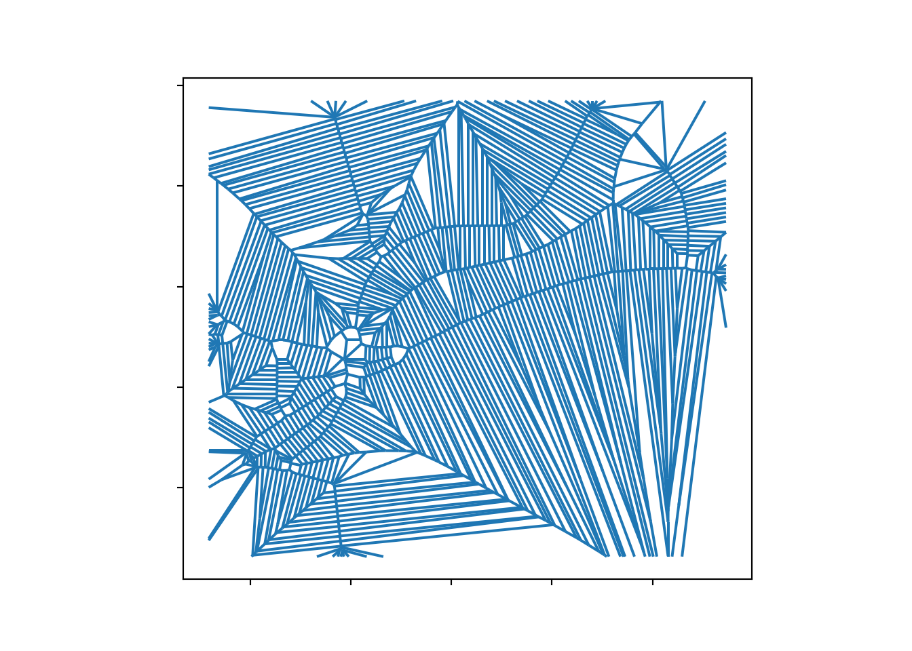
The centre-line is derived based by excluding lines making up the Voronoi diagrams that are at a distance of more than half-the-buffer-size from the buffer-edge, and is completely within the buffered geometry Figure 17.
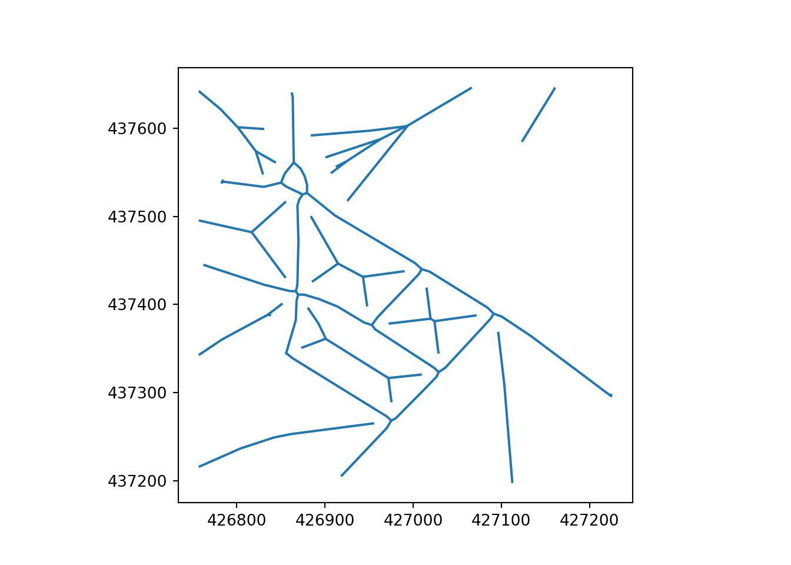
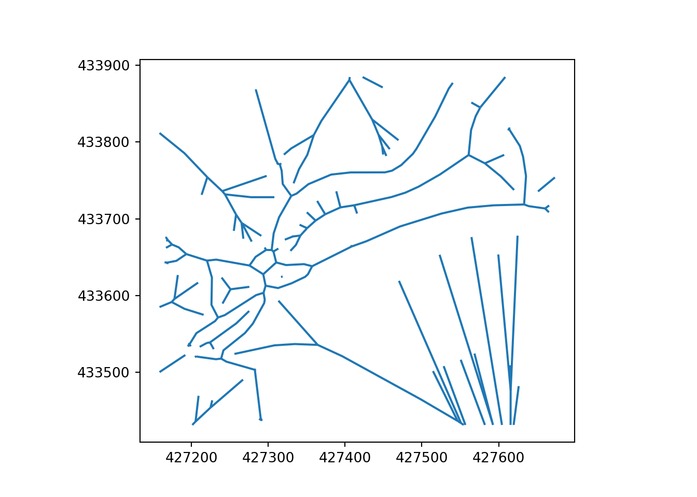
4.2.3 Voronoi simplified network
The centre-line network as shown in Figure 18 is then generated by removing knot-like features from the resulting network.
The primal network associated with the voronoi approach is illustrated in Figure 19.
4.3 Joining route networks
After a simplified network has been generated, using a the methods outlined in the previous section or through a separate process, the next step is to translate the values of attributes from the detailed network to the simplified network. This ‘joining’ step is vital for using simplified networks as the basis for presenting model outputs. In instances where a simplified version of the network is readily available, such as the Ordnance Survey’s Open Roads dataset in the UK, the steps for network simplification can be bypassed to save time. We have implemented the steps presented in this section in the rnet_merge() function in the stplanr R package (Lovelace, Ellison, and Morgan 2019).
The process is analogous to joining two datasets based on a common ‘key’ variable. In this case there is no definitive key, meaning that network joining can be regarded as a ‘fuzzy’ or ‘keyless’ join process (Suri et al., n.d.; Wachowicz and Mrozek 2019): as with the network simplification steps outlined above, the user must select joining parameters to maximise the accuracy of the join.
Data Preparation:
The main inputs of the network merging function are two route networks: rnet_x (the simple network geometry) and rnet_y (the original network with a more complex geometry and attributes that need to be translated onto the new network). rnet_x can also be referred to as the ‘target’ object, following the terminology used to describe database and ‘spatial similarity’ joins (Ballesteros, Cary, and Rishe 2011). rnet_y in this case represents the detailed network with attributes such as model outputs representing transport flows to be translated onto the new network.
Step 1: Coordinate Reference System Alignment
Transform the spatial data of both rnet_x (the simplified network) and rnet_y (the detailed network) to the same coordinate reference system. For this project, we have selected EPSG:27700.
Step 2: Defining the Function List
Create a function list that dictates how each attribute is to be processed:
Exclude: “geometry” from processing.
Mean Function: Applied to attributes like “Gradient” and “Quietness”. TODO expline the funtion of sum and mean
Sum Function: Used for aggregating values in columns such as “all_bicycle”.
Step 3: Using stplanr::rnet_merge for Integration
Employ the rnet_merge function from the stplanr package. This function is designed to merge route network data, taking into account the predefined functions and alignment in the coordinate system.
In the example code, four arguments need to be carefully defined:
dist(Buffer Distance): This parameter defines the buffer zone aroundrnet_xpin meters, essential for determining the proximity at which features from both networks are considered for merging. Typically, this value is refined to approximate the width of streets, ensuring a realistic spatial correlation between the network elements.segment_length(Segment Maximum Length): This specifies the upper limit for each segment’s length within the detailed network, here set to 10 meters. Segmenting the network in this manner enhances manageability and contributes to more precise localization of lines within the specified buffer. This granularity is key for achieving higher accuracy in attribute integration.funs(Function List): Comprises a series of functions assigned to process each attribute during the merge. This may involve applying statistical operations, such as calculating the mean or sum of various attributes. The choice of function for each attribute is determined based on the nature of the data and the specific analytical requirements.
When attribute$value corresponds to the sum function, it is crucial to ensure accuracy and relevance in the results. The complexity of the original network, characterized by multiple lines, implies a diverse distribution of attributes. A length-weighted sum method is used in this case, to ensure that results are not affected by many small but less important segments in the complex geometry. This approach accounts for the varying significance and characteristics of each line in the complex network, ensuring that more influential lines have a proportionate impact on the final aggregated value. The formula for the weighted sum is:
\[ \text{Weighted Sum} = \sum (x_i \times w_i) \]
Where xi represents the attribute value for the i-th line in the complex network, and wi is the length weight for the i-th line.
The optional normalization step adjusts the values associated with each simplified feature such that the total flow on complex and simplified networks are equal. Normalization captures the fact that simplified networks are likely to have a smaller total length and be less circuitous. The normalization formula is:
\[ \text{Normalized Value} = \frac{\text{Weighted Sum}}{\sum w_i} \]
The adjustment for overestimation, achieved through the over_estimate factor, becomes indispensable in this context. It serves as a corrective mechanism to align the summed and normalized values from the complex network, such as parallel lines, with the single line of the simplified network. This factor ensures that the attribute values are not only aggregated but also scaled appropriately to match the simplified network’s representation. The formula for adjustment of overestimation is:
\[ \text{over\_estimate} = \frac{\sum(\text{Aggregated Value} \times \text{Length of Single Line})}{\sum(\text{Original Value} \times \text{Length of Lines in Complex Network})} \]
\[ \text{Adjusted Value} = \frac{\text{Normalized Value}}{\text{over\_estimate}} \]
In essence, when transferring attribute values from a complex network to a simplified single-line network, employing a strategic approach is crucial. This approach includes using weighted summation to accurately aggregate values from multiple sources, normalization to ensure these values are meaningful within the simplified network, and an adjustment for overestimation to ensure the final values are proportionate and representative of the original network’s attributes. This meticulous process ensures that the simplified network accurately reflects the complexity and nuances of the original network.
max_angle_diff(Maximum Angular Difference): This parameter is crucial in regulating the maximum allowable angular deviation between segments and target lines during the merging process. With a set threshold of 20 degrees, it ensures that merging is confined to segments with similar orientations. Such consideration of angular alignment plays a pivotal role in maintaining the network’s geometric integrity. It notably helps in preventing inappropriate attribute transfers, such as avoiding the assignment of values from a road that is perpendicular to another, like in T junction scenarios. By enforcing this restriction on angular differences, the integrity and coherence of the route network’s structure are preserved, ensuring the merged network accurately reflects the true spatial layout and connectivity of the routes.
To calculate max_angle_diff, it’s necessary to accurately calculate the angles (bearings) of lines from two networks, rnet_x\(angle_x and rnet_y\)angle_y. The difference in these angles is then computed as rnetj\(angle_diff <- rnetj\)angle_y - rnetj$angle_x. In this study, the line_bearing function is defined to calculate the angle. As shown below,
rnet$angle = line_bearing(rnet_y, bidirectional = TRUE)The process of calculating the bidirectional bearing of a line segment in geographical coordinates involves normalizing the standard bearing so that it is the same regardless of the direction of travel along the line. Below is the detailed formula:
- Convert Latitudes and Longitudes to Radians:
\[ \text{lat}_1 = \text{lat}_1 \times \frac{\pi}{180} \]
\[ \text{lat}_2 = \text{lat}_2 \times \frac{\pi}{180} \]
\[ \text{lon}_1 = \text{lon}_1 \times \frac{\pi}{180} \]
\[ \text{lon}_2 = \text{lon}_2 \times \frac{\pi}{180} \]
- Calculate Bearing:
\[ \Delta lon = lon_2 - lon_1 \]
\[ \theta = atan2(\sin(\Delta lon) \times \cos(lat_2), \cos(lat_1) \times \sin(lat_2) - \sin(lat_1) \times \cos(lat_2) \times \cos(\Delta lon)) \]
- Convert Bearing from Radians to Degrees and Normalize Bidirectional Bearing to [0, 180) Degrees:
\[ \theta = \theta \times \frac{180}{\pi} \]
\[ \theta = \theta \mod 180 \]
In this bidirectional adjustment, the bearing is normalized to a range of [0, 180) degrees. This means that opposite directions along a line yield the same bearing value. This approach is particularly useful in scenarios where the directionality of the line is not a primary concern, ensuring consistency in bearing values regardless of the line’s travel direction.

Once we obtained the rnet_merged dataset, which is a simplified network but also contains detailed attributes, we then need a series of steps to refine the data:
Cleaning: The
rnet_mergeddataset undergoes an initial cleaning phase where superfluous columns are removed. This step enhances dataset manageability and focuses on relevant data by eliminating columns such as ‘identifier’ and ‘length_x’.Dimensionality Reduction: Z and M dimensions are removed from the dataset, as they are redundant for our analysis and contribute to unnecessary increases in file size. This reduction simplifies the dataset and optimizes it for storage and processing efficiency.
NA Handling: A thorough examination is conducted for the presence of NA values across the columns. Any rows where all the targeted columns contain NA values are filtered out.
Spatial Subsetting: Following the removal of linestrings that contain NA attributes from the
rnet_mergeddataset, we proceed to create a geometric buffer zone. This zone serves as a spatial criterion for identifying and retaining only those geometries that lie outside of this buffer. A subset ofrnet_yp, termedrnet_yp_rest, is then delineated based on this spatial relationship, effectively omitting any geometries that intersect with or fall within the buffered area. This step ensures that only those components ofrnet_ywhich are spatially distinct fromrnet_mergedare retained for further consideration.Network Simplification: In the final stage of simplification, the datasets
rnet_yp_restandrnet_merged_allare combined to form the final network, which retains the simplicity of the original simplified structure while concurrently encompassing the detailed attributes, thereby providing a comprehensive yet efficient foundation for further analysis.
By meticulously following these steps, we ensure that the integration of attributes is not only accurate but also tailored to the specific needs of our analysis.

5 Results
Some results in column order Armley, Edinburgh, Doncaster rail. Rows 1 input, 2 skeltonized, 3 voronoi, 4 primal skeletonized, 5 primal voronoi
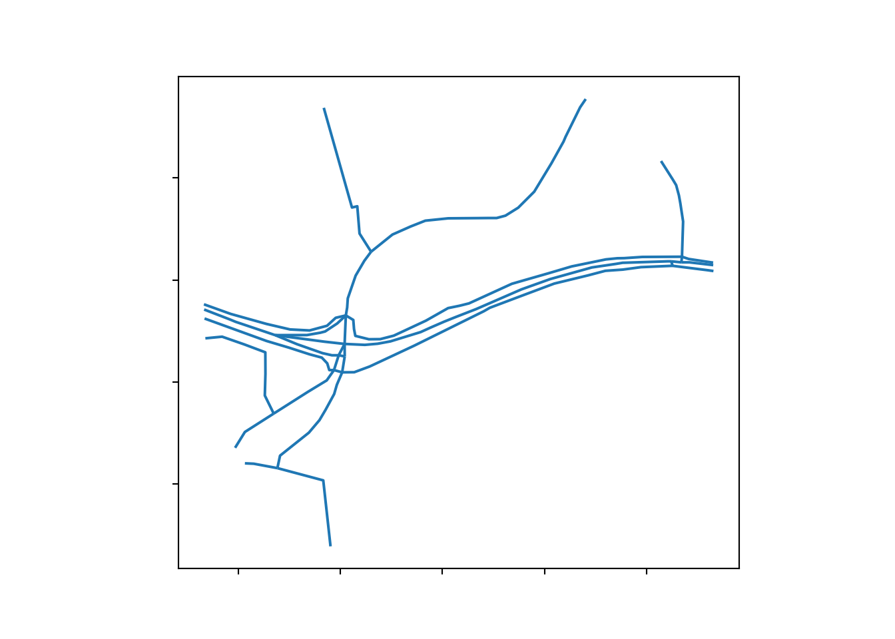
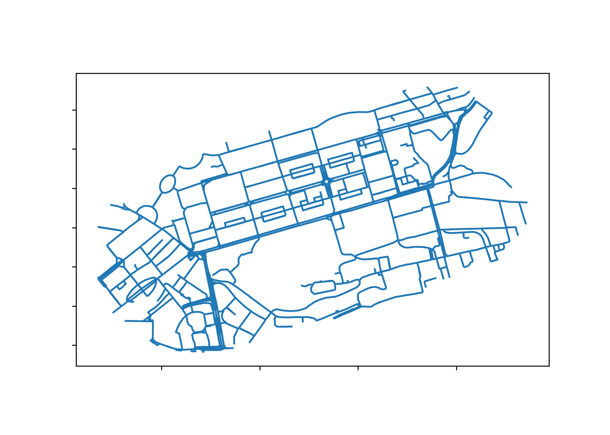
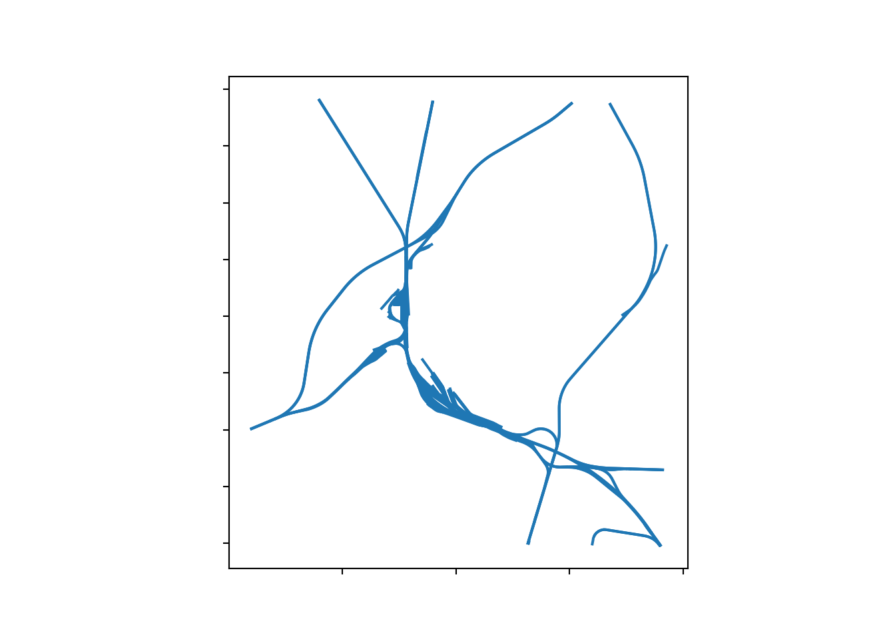
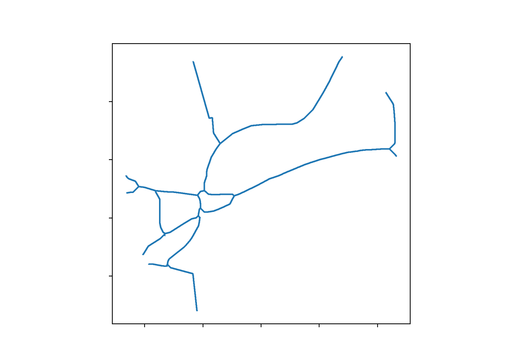
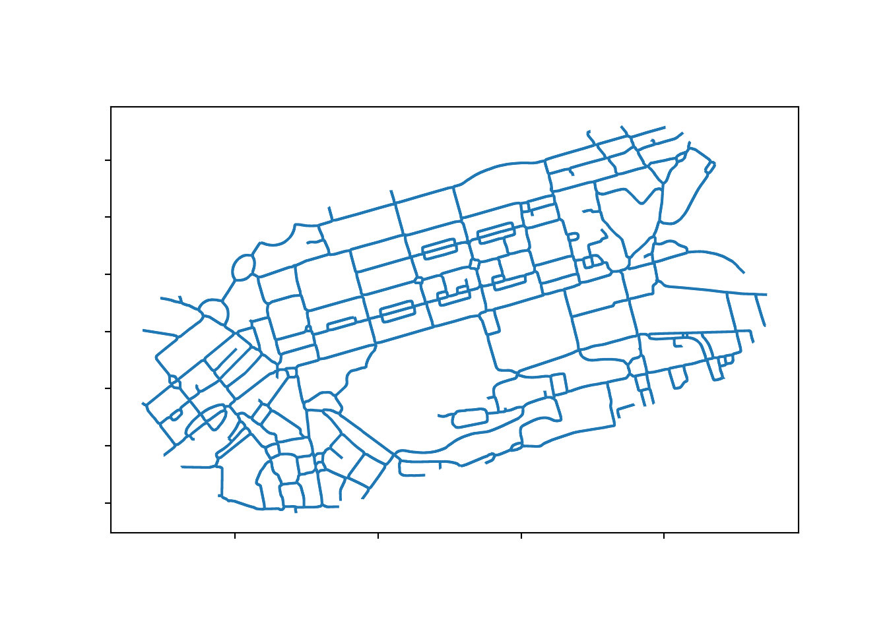
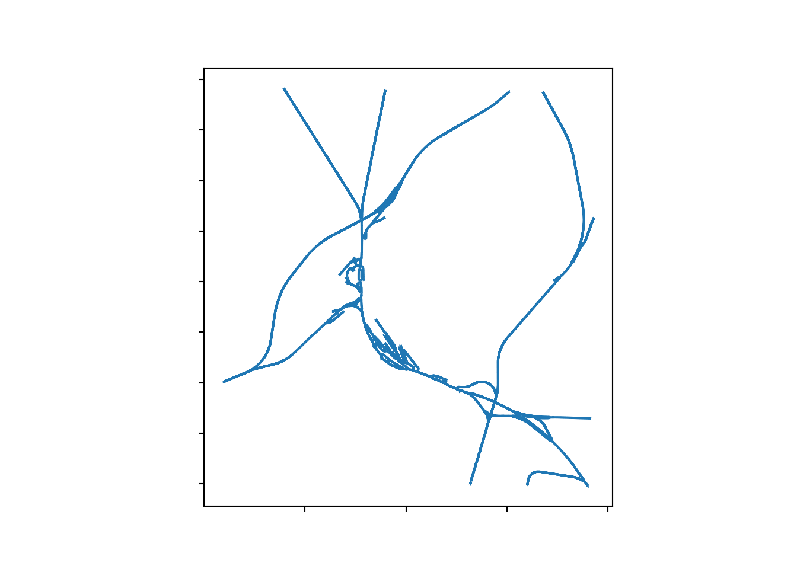
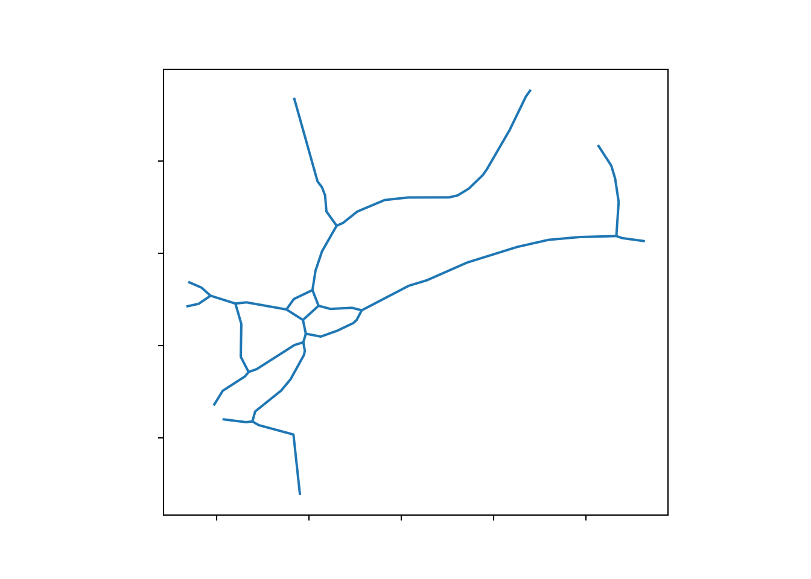


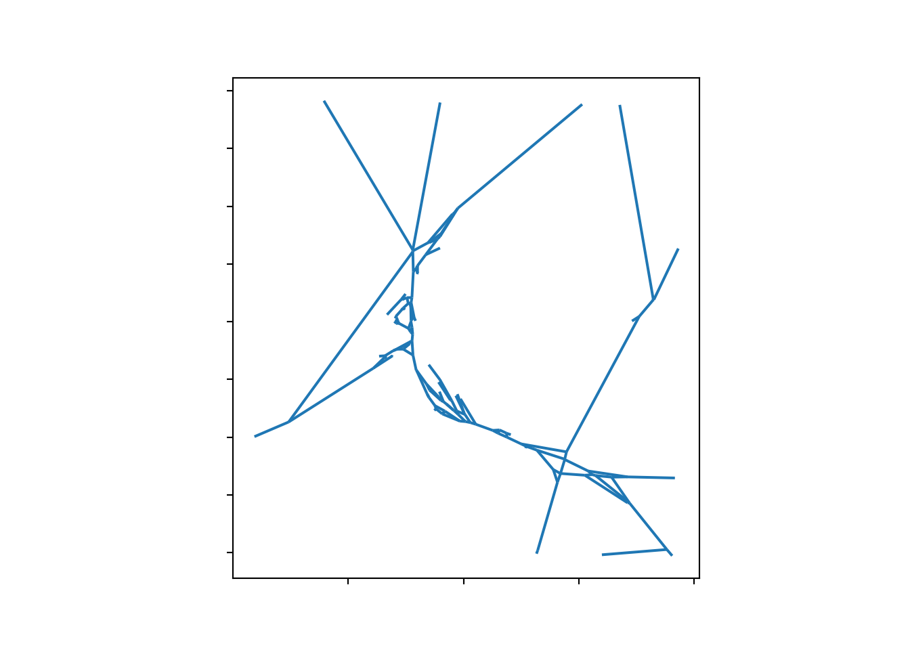
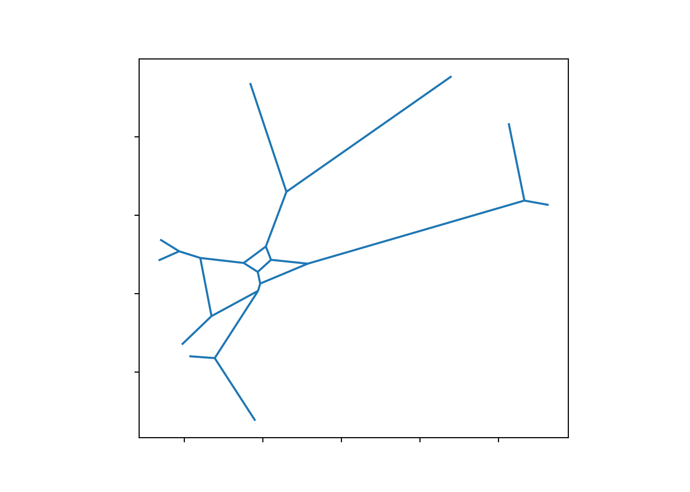
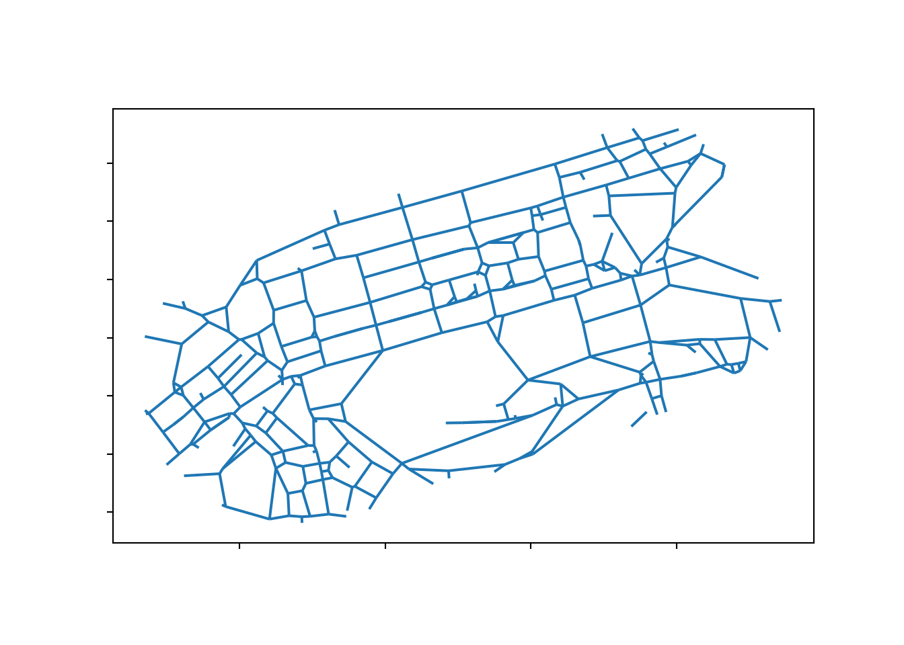

6 Discussion
Optimisation
Packaging
7 References
Ballesteros, Jaime, Ariel Cary, and Naphtali Rishe. 2011. “SpSJoin: Parallel Spatial Similarity Joins.” In, 481484. GIS ’11. New York, NY, USA: Association for Computing Machinery. https://doi.org/10.1145/2093973.2094054.
Lovelace, Robin, Richard Ellison, and Malcolm Morgan. 2019. Stplanr: Sustainable Transport Planning.
Lovelace, Robin, Anna Goodman, Rachel Aldred, Nikolai Berkoff, Ali Abbas, and James Woodcock. 2017. “The Propensity to Cycle Tool: An Open Source Online System for Sustainable Transport Planning.” Journal of Transport and Land Use 10 (1). https://doi.org/10.5198/jtlu.2016.862.
Morgan, Malcolm, and Robin Lovelace. 2020. “Travel Flow Aggregation: Nationally Scalable Methods for Interactive and Online Visualisation of Transport Behaviour at the Road Network Level.” Environment & Planning B: Planning & Design, July. https://doi.org/10.1177/2399808320942779.
Suri, Sahaana, Ihab F. Ilyas, Christopher Ré, and Theodoros Rekatsinas. n.d. “Ember: No-Code Context Enrichment via Similarity-Based Keyless Joins.” https://doi.org/10.48550/arXiv.2106.01501.
Wachowicz, Anna, and Dariusz Mrozek. 2019. “Fuzzy Join as a Preparation Step for the Analysis of Training Data.” In, edited by Stanisław Kozielski, Dariusz Mrozek, Paweł Kasprowski, Bożena Małysiak-Mrozek, and Daniel Kostrzewa, 263–73. Communications in Computer and Information Science. Cham: Springer International Publishing. https://doi.org/10.1007/978-3-030-19093-4_20.
Footnotes
See the online documentation of the SUMO traffic simulation tool for an example of the wide range of data formats that transport datasets can output.↩︎